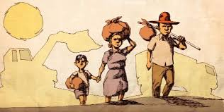

Busca por empregos melhores.
As pessoas se mudam do campo para a cidade em busca de ofertas de trabalho.
É a saída em massa das pessoas do campo em direção à cidade.
As pessoas se mudam do campo para a cidade em busca de ofertas de trabalho.
Devido a chegada da tecnologia nas máquinas e métodos inovadores na agricultura.
A concentração de terras nas mãos de poucos obriga pequenos agricultores a ir para a cidade.
Desastres trazem perdas significativas obrigando pessoas a recomeçar a vida em outo lugar.
Foi mais comum na Europa Ocidental e Nos Estados Unidos.
O lado bom do êxodo rural é a oportunidade de desenvolvimento para as cidades.